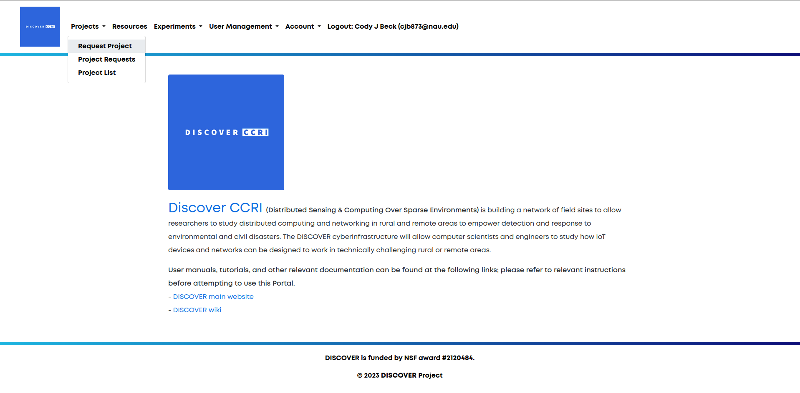
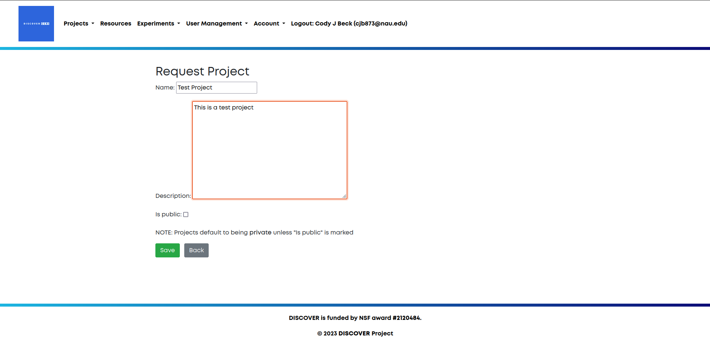
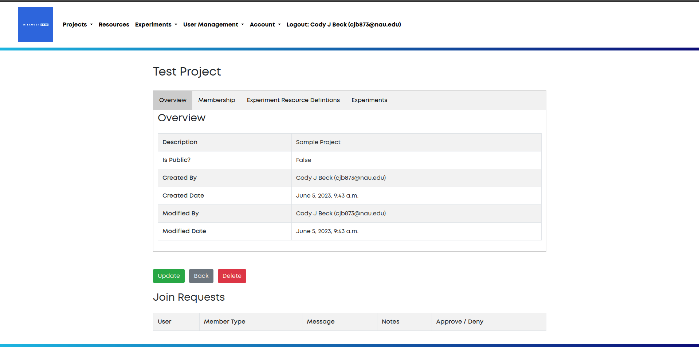
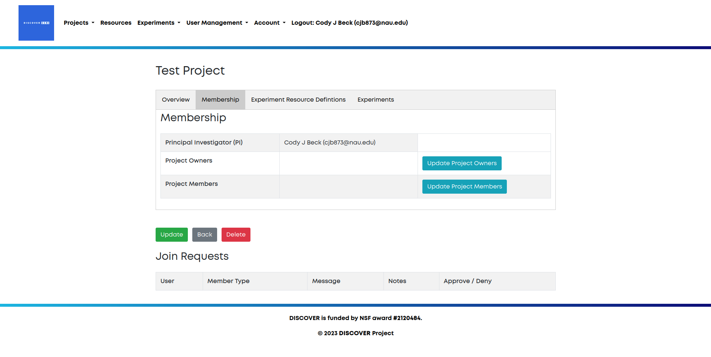
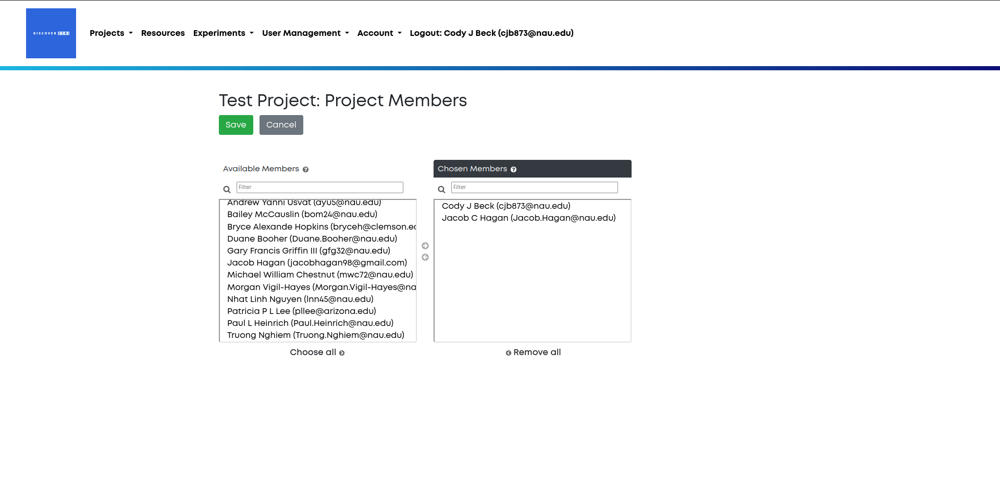

Projects¶
Projects are the highest level of organization within Discover. Projects can be home to multiple users, owners and experiments. Each project has one principal investigator. We recommend creating only one project per entity (organization, lab, or research grant). Thus all experiments for the entity will be in one place, and under the purview of a single principal investigator.
Project Creation and Management¶
This section is for principal investigators (PIs) and project owners only.
Project Requests¶
To create a project, navigate to the Request Project option in the navigation bar.

Next, fill in the fields for the project’s name and description. Usually the name will be the name of your entity, and the description will be a general description of what your entity plans to do with the Discover platform.
Once you have filled out these fields, your last choice is to decide whether or not your project should be private. By default, all projects are private. All aspects of public projects can be viewed by all users of Discover.
Finally, click on the save button. This will save your project request and notify the Discover team of your request. To view all of your requests you can click on the Project Requests option in the navigation bar.

Project Setup¶
Once your project has been approved, navigate to Project List using the navigation bar. Here you can see a list of all of your projects, along with a list of pubic projects that you can request to join.

Click on your new project’s name to view the project homepage. This will give you important information such any requests to join your project, user lists, experiment resource definitions, and a list of all your project’s experiments.

Managing Users¶
For your project, you are able to add project owners and project users. Project users have the ability to create and manage experiments and experiment resource definitions. Project owners have the added capabilities of adding new users to the project. To add new users and owners, navigate to the Membership tab of your project.

Click on the Update Project Members button to update the users, or the Update Project Owners button to update the owners.
Once you have selected which to update, you will be presented with two lists of members. The left side lists all Discover users that can be added to your project, whereas the right side contains all Discover users that have already been added as members of your project. Double click on a user, or single click and use the arrows in the middle of the two lists to move a member. Use the save button to save all changes. To make someone a project owner, they must be added as a project member before they can be added as a project owner.

Experiments¶
The other two tabs, Experiment Resource Definitions and Experiments, will be covered in other sections.